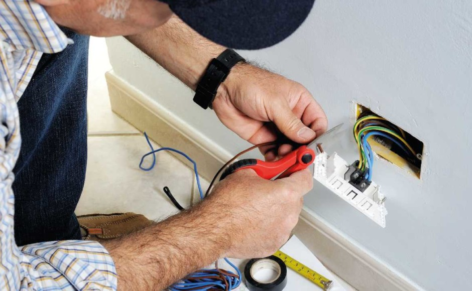
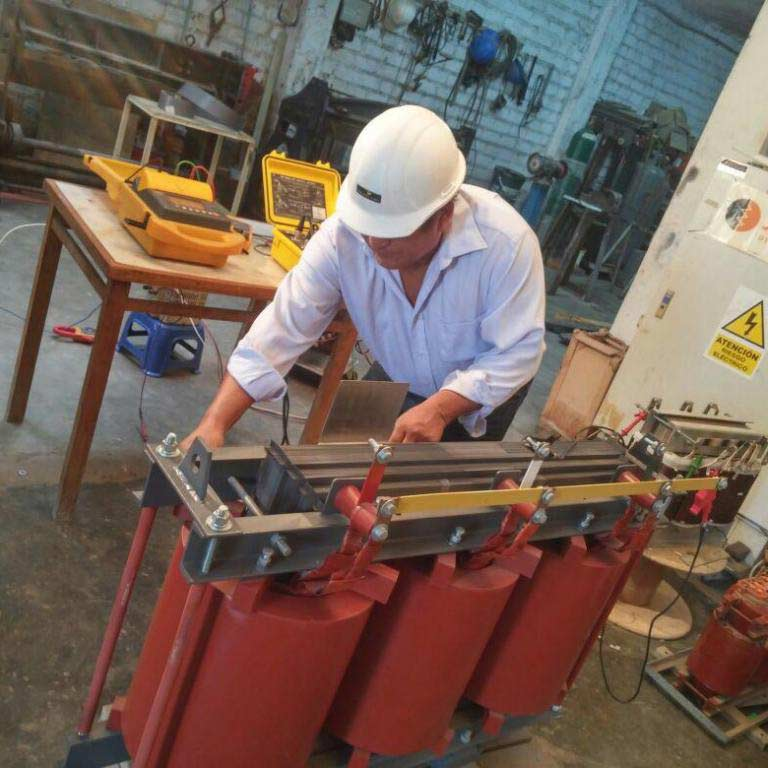

| Electricidad | |
| 1. MANTENIMIENTO DE INSTALACIONES EMPOTRADAS: |  |
Riesgos eléctricos. Esquemas eléctricos. Instalación de sensores. |
|
| 2. MANTENIMIENTO DE ARTEFACTOS A MOTOR: |  |
Principio de Motores. Artefactos de Motor. |
|
| 3. MANTENIMIENTO DE TRANSFORMADORES: | |
Diagramas eléctricos y electrotécnicos. Mantenimiento de artefactos a transformador. |
|